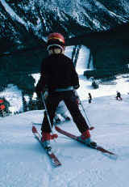

White Valley sípálya
- Kezdőoldal
- Időjárás
- Járatinformáció
- Kapcsolat
Ideális pálya minden sízőnek

White Valley hófödte csúcsa izgalmas síprogramokkal várja a sportolni vágyókat. Kezdőknek való lejtőitől lavinaveszélyes jelöletlen meredélyjeiig, minden látogató megtalálja a leginkább kedvére való terepet.
A nem kevesebb, mint 105 pályát 75 sílift szolgálja ki. White Valley sokféle szálláslehetőséget és számos egyéb szabadidős programot kínál.
Kiemelt ajánlataink
- 1. Budapest
- 2. Cologne
- 3. Dortmund
- 4. Helsinki
- 5. Moscow
- 6. Oslo
- 7. Prague
- 8. Rome
- 9. Stockholm
- 10. Warsaw
- 11. Zurich
Elérhetőségeink: Telefon: (06-99) 999-9999